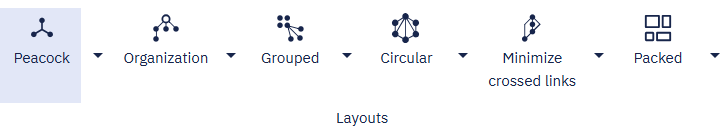
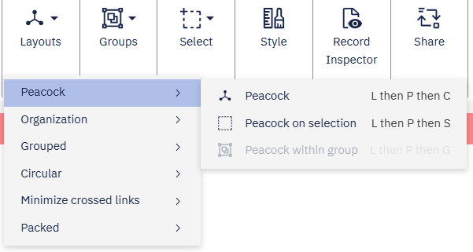

Multiple tabs in the application ribbon
Starting with version 4.4.4.5 of i2 Analyze, the i2 Notebook web client supports multiple tabs in the application ribbon, providing greater control over how and where you surface commands. This enhancement allows you to improve the user experience by categorizing related features into separate tabs, making navigation more intuitive.
Adding a custom tab
In the plug-in entry point, you can add a tab by calling IApplicationRibbon.addTab().
The method creates a new tab in the application ribbon, providing a new command area where you can surface commands individually or group them for better organization.
const ribbon = api.commands.applicationRibbon;
const customTab = ribbon.addTab({
id: 'customTabId',
label: 'Insert',
});
Adding commands to a tab
After you create the tab, you can add commands to it. The commands that you add can be system commands or custom commands that you define in your plug-in.
You can add the same command to multiple tabs, or move commands from one tab to another. For example:
ribbon.homeTab.remove(api.commands.systemCommands.toggleLists);
customTab.surfaceCommands(
api.commands.systemCommands.toggleStyling,
api.commands.systemCommands.toggleLists
);
This code removes the toggleLists command from the Home tab and adds it to the newly created tab. On the other hand, the toggleStyling command is now surfaced in both the Home tab and the custom Insert tab.
Grouping commands together in a tab
Custom tabs support groups of commands in exactly the same way that the Home tab does.
Groups of commands support an optional type property that controls how the group is rendered. type can take a value of either 'collapsed', 'expanded' or 'command'.
Expanded
All commands in the group are displayed inline, and are directly visible in the ribbon or menu. This is the default when type is omitted.
Use this type for commands that users access frequently, where immediate visibility reduces friction.
Collapsed
The group appears as a single button showing the group's icon and label. Clicking it opens a dropdown listing the contained commands.
Use this type when you want to keep the ribbon uncluttered, or when the commands in the group are used less frequently. A collapsed group lets you surface many commands without each one occupying its own space in the ribbon.
customTab
.addGroup({
id: '6878b309-2dfd-4431-9976-1a79d7c7b43a',
icon: {
type: 'inlineSvg',
svg: commandSvg,
},
label: 'Revert',
type: 'collapsed',
})
.surfaceCommands(api.commands.systemCommands.undo, api.commands.systemCommands.redo);
This code creates a group in the tab called Revert, and adds the undo and redo system commands to it.
Command
Setting type to 'command' creates a split button group. The first command surfaced in the group becomes the primary action, rendered as a directly clickable button. The remaining commands are accessible from a dropdown menu attached to the button.
Use this type when one command in the group is the clear default action, but related alternatives should still be accessible. This promotes the most-used command to a single click while keeping the ribbon concise.
customTab
.addGroup({
id: 'b63f427f-7afc-4a8a-a625-939cd0f0e7cb',
icon: {
type: 'inlineSvg',
svg: layoutSvg,
},
label: 'Layout',
type: 'command',
})
.surfaceCommands(
api.commands.systemCommands.layoutOrganizationOnSelection,
api.commands.systemCommands.layoutCircularOnSelection,
api.commands.systemCommands.layoutMinimizeCrossedLinksOnSelection
);
This code creates a split button group called Layout. The layoutOrganizationOnSelection command is the primary action and is directly accessible from the ribbon button. The layoutCircularOnSelection and layoutMinimizeCrossedLinksOnSelection commands appear in the associated dropdown menu.
Split button groups can vary in appearance depending on where they are rendered, but they continue to expose a primary action alongside additional commands. When split button groups are placed top-level within a ribbon tab, they will render as a split button.

When the split button group is nested within a collapsed group, each split button will render as a context menu item with a sub-menu indicator. Selecting the menu item opens a submenu containing all commands from that split button's command list.

Positioning tabs
When you add a tab to the ribbon, you can specify its position relative to other tabs. For example, if you want to place the custom Insert tab before the Home tab, you can do so like this:
const ribbon = api.commands.applicationRibbon;
const homeTab = ribbon.homeTab;
const customTab = ribbon.addTab(
{
id: 'customTabId',
label: 'Insert',
},
homeTab
);
In this code, homeTab refers to the existing Home tab.
By passing it as the second argument to addTab(), the Insert tab is positioned before the Home tab in the application ribbon.